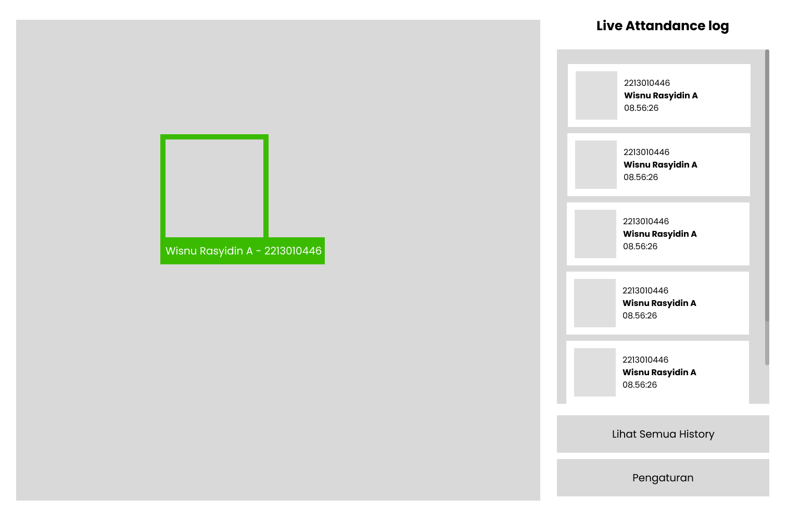
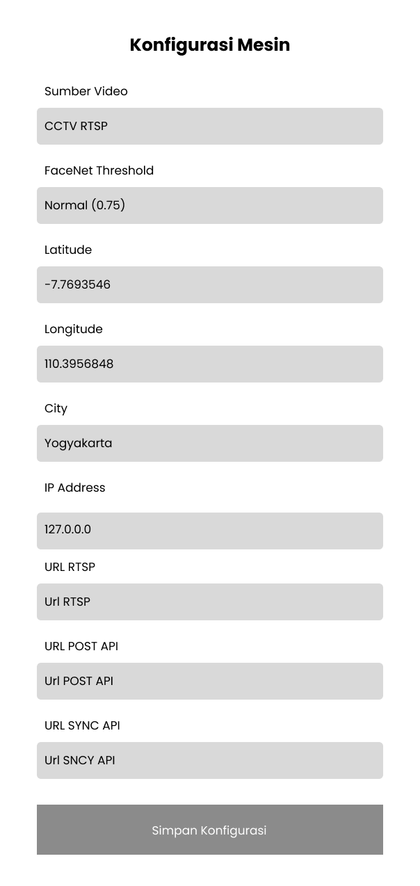
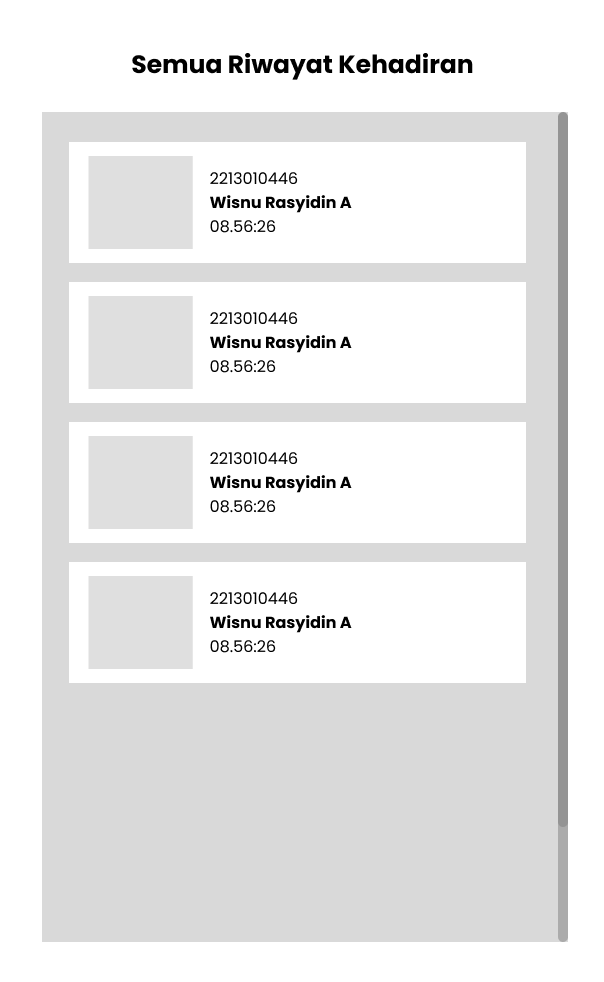
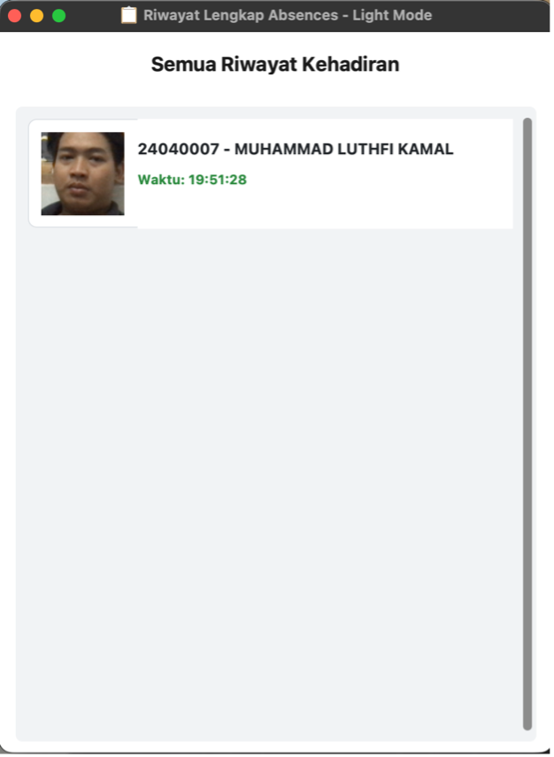
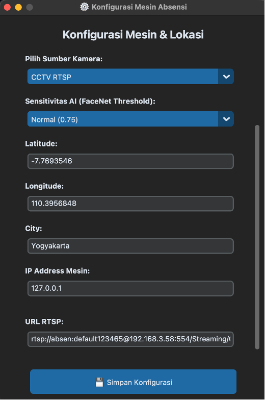

Sistem Face Recognition Berbasis IP CCTV dan FaceNet untuk Presensi Karyawan di PT Dinamika Mediakom
Program Studi Informatika
Dosen Pembimbing:
Ina Sholihah Widiati, M.Kom
Tinuk Agustin, M.Kom
Latar Belakang
- Presensi saat ini pakai 2 metode: fingerprint (otomatis masuk Sistem Presensi Pusat) dan manual tulis tangan
- Jan–Apr 2026: rata-rata 45%–55% karyawan tercatat terlambat karena sensor fingerprint gagal baca jari basah/kotor/luka, antrean panjang
- Data presensi menentukan remunerasi (gaji, bonus, THR) — kerugian material bagi karyawan
- Solusi: Face Recognition berbasis Computer Vision memanfaatkan 6 unit IP CCTV yang sudah ada (pakai 1 unit di pintu masuk utama)
- Bukan mengganti Sistem Presensi Pusat, tapi menambahkan modul Face Recognition sebagai client terhubung via REST API (GET sync data wajah, POST kirim presensi)
- Model: BlazeFace (MediaPipe) untuk deteksi + Inception-ResNet-v1 (FaceNet) untuk ekstraksi fitur — ringan di CPU only, 8GB RAM
Rumusan Masalah
- Bagaimana membangun sistem Face Recognition dengan IP CCTV & FaceNet untuk presensi karyawan?
- Bagaimana menguji akurasi (Confusion Matrix) dan fungsionalitas sistem (Blackbox Testing)?
- Bagaimana merancang integrasi otomatis hasil pengenalan wajah ke Sistem Presensi Pusat?
Batasan Masalah
- Python + MediaPipe + FaceNet, input dari 1 unit IP CCTV via RTSP
- Populasi pengguna: 30 karyawan PT Dinamika Mediakom
- Presensi otomatis tanpa kontak fisik
- Error handling: koneksi RTSP terputus & kegagalan kirim API
- Integrasi via REST API (GET sync foto, POST data presensi)
- Threshold biometrik 0.75 pada pencahayaan stabil
Tujuan & Manfaat Penelitian
- Membangun sistem, mengukur akurasi (Confusion Matrix + Blackbox), mewujudkan integrasi otomatis ke Sistem Presensi Pusat
Efisiensi antrean, hemat biaya perangkat baru (pakai CCTV eksisting), akurasi data lebih terjamin
Kontribusi ilmiah di bidang Computer Vision dan biometrik wajah
Pengasahan skill teknis di bidang Computer Vision dan pengembangan sistem
Metode Penelitian
- Mixed Method – Concurrent Embedded (kualitatif primer, kuantitatif embedded)
- Sifat: Eksperimen
- Observasi, wawancara (Direktur, HR, Kepala IT), studi pustaka, pengumpulan dataset wajah
Analisis Kebutuhan
Deteksi otomatis, bounding box hijau/merah, cooldown 30 detik
Live log, riwayat harian, sinkronisasi database wajah, konfigurasi parameter
Kirim data via REST API, logging ke 3 folder
Performance, Information, Economic, Control, Efficiency, Service
Python 3.8–3.10, OpenCV, MediaPipe v0.10.21, Keras-FaceNet v0.3.0, NumPy, CustomTkinter, Requests
PC/Mini PC (i5 Gen-10/Ryzen 5, RAM 8GB), IP CCTV 1080p RTSP, LAN/Wi-Fi min 100 Mbps
Perancangan & Implementasi Sistem
Thread Pembaca RTSP
Thread Model (Deteksi + Pengenalan)
Thread Pengirim Data
- Validasi lokasi GPS (geofencing)
- Sistem logging untuk audit jejak presensi
Wireframe Antarmuka
Rancangan awal (wireframe) antarmuka sistem sebelum pengembangan



Hasil Pengembangan Antarmuka
Tampilan akhir aplikasi setelah proses pengembangan (CustomTkinter)



Hasil Pengujian: Blackbox Testing
10 skenario uji (TS-1 s/d TS-10) mencakup aktor Karyawan, Admin, dan Tim IT
| Kode | Skenario | Hasil |
|---|---|---|
| TS-1 | Konfigurasi parameter sistem | Sukses |
| TS-2 | Konektivitas RTSP | Sukses |
| TS-3 | Sinkronisasi database wajah | Sukses |
| TS-4 | Deteksi wajah karyawan | Sukses |
| TS-5 | Pengenalan wajah terdaftar | Sukses |
| TS-6 | Penolakan wajah tidak terdaftar | Sukses |
| TS-7 | Cooldown 30 detik | Sukses |
| TS-8 | Pengiriman data ke server pusat | Sukses |
| TS-9 | Live log aktivitas | Sukses |
| TS-10 | Riwayat harian presensi | Sukses |
Hasil Pengujian: Confusion Matrix
100 sampel uji (80 karyawan + 20 tamu)
Threshold 0.75 optimal — aman dari orang asing (precision tinggi) tapi tetap nyaman untuk karyawan (recall tinggi)
Hasil Pengujian: Operasional Lapangan
Uji 30 karyawan di pintu masuk — Fingerprint vs Face Recognition
Analisis Komparatif PIECES
Sebelum vs Sesudah implementasi Face Recognition
Kesimpulan
- Sistem berhasil dibangun, fleksibel untuk penambahan karyawan baru tanpa reset ulang
- Andal, aman (precision 98,7%), dan nyaman (recall 95,0%) — seimbang antara keamanan & kenyamanan
- Alur data dari IP CCTV sampai Sistem Presensi Pusat berjalan otomatis di background tanpa mengganggu performa aplikasi
Saran Pengembangan
- Tambahkan liveness detection (deteksi kedipan/senyum) agar tidak bisa ditipu foto/video
- Gunakan perangkat pemroses khusus (embedded/edge device) agar lebih hemat daya
- Penyesuaian pencahayaan otomatis kamera untuk atasi silau matahari
Terima Kasih
Sesi Tanya Jawab